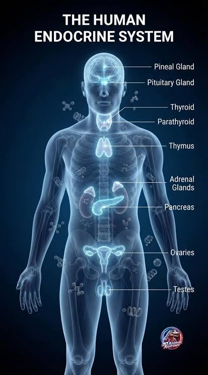

DIGESTIVE METABOLISM MODULE
GASTRIC PH
1.8 pH
PARTICLE FLUX
142 p/s
DIGESTIVE PROCESSES // BIOMETRIC FEED
CAM_03 // ACTIVE
GASTROINTESTINAL TELEMETRY
NUTRIENT ABSORPTION EFFICIENCY
72.4%
ENZYME CATALYTIC ACTIVITY
83.1%
CELLULAR METABOLIC FLUX
94.8%
MICROGRAVITY FLUID SHIFT
12.4 mmHg
[00:15:01] Digestive telemetry online at 0.38G.
[00:15:05] Peristaltic wave stabilization nominal.
[00:15:10] Nutrient absorption efficiency stable.